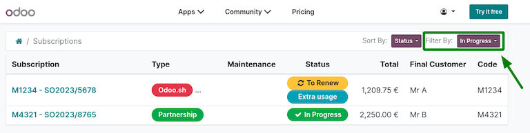

Certificado HTTPS (IoT)¶
¿Qué es HTTPS?¶
HTTPS es la versión segura del HTTP, que es el protocolo principal utilizado para enviar datos entre un navegador y un sitio web. HTTPS está encriptado para aumentar la seguridad de la transferencia de datos.
HTTPS utiliza un protocolo de encriptación para encriptar las comunicaciones. El protocolo se llama Seguridad de la capa de transporte (TLS, por sus siglas en inglés), anteriormente conocido como Capa de conexión segura (SSL, por sus siglas en inglés).
HTTPS funciona mediante la transmisión de certificados TLS/SSL, cuya función es verificar que cada proveedor es realmente quien dice ser.
Nota
En esta documentación y Odoo se utilizará el término «certificado HTTPS» para definir el hecho de que el certificado SSL es válido y permite una conexión HTTPS.
¿Por qué es necesario?¶
Para comunicarse con determinados dispositivos de red (en especial terminales de pago), es obligatorio el uso de HTTPS. Si el certificado HTTPS no es válido, habrá algunos dispositivos que no podrán interactuar con la caja IoT.
Cómo obtener un certificado de protocolo seguro de transferencia de hipertexto (HTTPS)¶
El certificado HTTPS se genera de forma automática.
La caja IoT enviará una solicitud específica a https://www.odoo.com, el cual devolverá el certificado HTTPS si la caja IoT y la base de datos cumplen los requisitos.
Criterios de elegibilidad para IoT¶
La base de datos debe ser una instancia de producción. La instancia de base de datos no debe ser copia, duplicado, preproducción o entorno de desarrollo.
La suscripción de Odoo debe:
Tener una línea de suscripción a la caja IoT.
El estado debe ser En progreso.
Si la suscripción está vinculada a un usuario del portal https://www.odoo.com compruebe la información en la página de suscripción del portal.
En este caso, ambas suscripciones se consideran «en progreso», ya que se ha utilizado la etiqueta Filtrar por: en progreso.¶
Nota
Si no está seguro de la suscripción, póngase en contacto con el gerente de cuentas de la base de datos o con su partner.
Solución de errores de certificado del Protocolo seguro de transferencia de hipertexto (HTTPS)¶
Si durante el proceso de generación u obtención del «certificado HTTPS» se produce algún error, se mostrará un código de error específico en la página de inicio de la caja IoT.
Truco
Al acceder a la página de inicio de la caja IoT, podrá ver el certificado HTTPS y, si no lo tiene, intente generarlo. Si se produce un error en la página de inicio de la caja IoT, deberá actualizar la página de inicio de la caja IoT para comprobar si el error desaparece.
ERR_IOT_HTTPS_CHECK_NO_SERVER¶
- Razón:
Hace falta la configuración del servidor. En otras palabras, la instancia de Odoo no está conectada con la caja IoT.
- Solución:
Asegúrese de que el servidor está configurado.
Ver también
ERR_IOT_HTTPS_CHECK_CERT_READ_EXCEPTION¶
- Razón:
Se ha producido un error sin resolver al intentar leer el certificado HTTPS existente.
- Solución:
Asegúrese de que el archivo de certificado HTTPS sea legible.
ERR_IOT_HTTPS_LOAD_NO_CREDENTIAL¶
- Razón:
Hace falta el contrato y/o la base de datos UUID.
- Solución:
Asegúrese de que ambos valores están configurados según lo previsto. Para modificarlos, vaya a la página de inicio de la caja IoT y busque Credencial.
ERR_IOT_HTTPS_LOAD_REQUEST_EXCEPTION¶
- Razón:
Ocurrió un error inesperado cuando la caja IoT intentó conectarse a https://www.odoo.com. Es probable que las causas se deban a la infraestructura o configuración de la red:
La caja IoT no tiene acceso a internet.
La red no permite que la caja IoT se comunique con https://www.odoo.com. Esto puede ocurrir debido a que los dispositivos de red impiden la comunicación (firewalls, entre otras cosas) o gracias a la configuración de la red (VPN, etc.).
Nota
Puede encontrar más información sobre el error que se produjo en los detalles de la excepción de la solicitud completa, estos se encuentran en los registros de la caja IoT.
- Solución:
Advertencia
Consulte a la persona que administra su sistema o su red si ocurre este problema. Este código de error depende de la infraestructura de red y va más allá del alcance del servicio de soporte de Odoo.
ERR_IOT_HTTPS_LOAD_REQUEST_STATUS¶
- Razón:
La caja IoT se pudo conectar a https://www.odoo.com pero recibió una respuesta HTTP inusual (códigos de estado).
Este código de error también proporcionará los códigos de estado de respuesta HTTP. Por ejemplo, si el error dice
ERR_IOT_HTTPS_LOAD_QUEST_STATUS 404esto significa que la respuesta de la página fue un error 404 que indica que no fue posible encontrar la página.- Solución:
Verifique con un navegador web si el sitio https://www.odoo.com está caído, ya que es posible que se encuentre en mantenimiento.
Si https://www.odoo.com está caído debido a que se encuentra en mantenimiento, la única solución es esperar a que el sitio vuelva a estar en línea.
Si https://www.odoo.com no está en mantenimiento, envíe un ticket de soporte sobre este error. Asegúrese de incluir en el ticket que enviará a soporte el código de estado de 3 dígitos junto al error de código.
ERR_IOT_HTTPS_LOAD_REQUEST_NO_RESULT¶
- Razón:
La caja IoT se pudo conectar con https://www.odoo.com, pero no proporcionó el certificado HTTPS.
- Solución:
Asegúrese de que la caja IoT y la base de datos son elegibles para recibir un certificado: elegibilidad de Internet de las cosas (IoT).
Cómo asegurarse de que el certificado HTTPS es correcto¶
Si el certificado se aplicó de forma correcta, en la base de datos de Odoo aparecerá una nueva URL HTTPS que termina en .odoo-iot.com para la caja IoT, dentro de la aplicación en el formulario de ese dispositivo en específico.
Se establecerá una conexión HTTPS segura al navegar a la URL en un navegador.
Icono de seguridad en Chrome para Windows 10. Indica que la conexión está asegurada en HTTPS.¶
La página de inicio de la caja IoT ahora mostrará el estado OK junto al certificado HTTPS. Aparecerá información sobre el certificado al hacer clic sobre el icono del menú desplegable.

Errores del sistema de nombres de dominio (DNS)¶
Si es posible acceder a la caja IoT desde su dirección IP, pero no desde el dominio asignado de Odoo .odoo-iot.com, entonces es probable que la caja IoT tenga un error DNS. En algunos navegadores aparecerá un código de error que menciona al DNS (como DNS_PROBE_FINISHED_NXDOMAIN).
Estos errores del DNS pueden aparecer de la siguiente forma en distintos navegadores:

Solución de errores del sistema de nombres de dominio (DNS)¶
Si el enrutador permite cambiar el DNS de forma manual, cámbielo para que use el DNS público de Google.
Si no puede cambiar el DNS de su enrutador, entonces deberá cambiar los ajustes del DNS en cada uno de los dispositivos que utilizan el DNS público de Google. Tendrá que hacerlo en cada dispositivo que interactuará con la caja IoT (por ejemplo computadora, tableta o teléfono). Los procesos de configuración de cada dispositivo se pueden encontrar en el sitio web de sus fabricantes.
Nota
Es probable que no necesite cambiar los ajustes de DNS en otros dispositivos IoT, como las terminales de pago, pues ya están configurados con un DNS personalizado.
Advertencia
Consulte a la persona que administra su sistema o su red si ocurre este problema. Este código de error depende de la infraestructura de red y va más allá del alcance del servicio de soporte de Odoo.